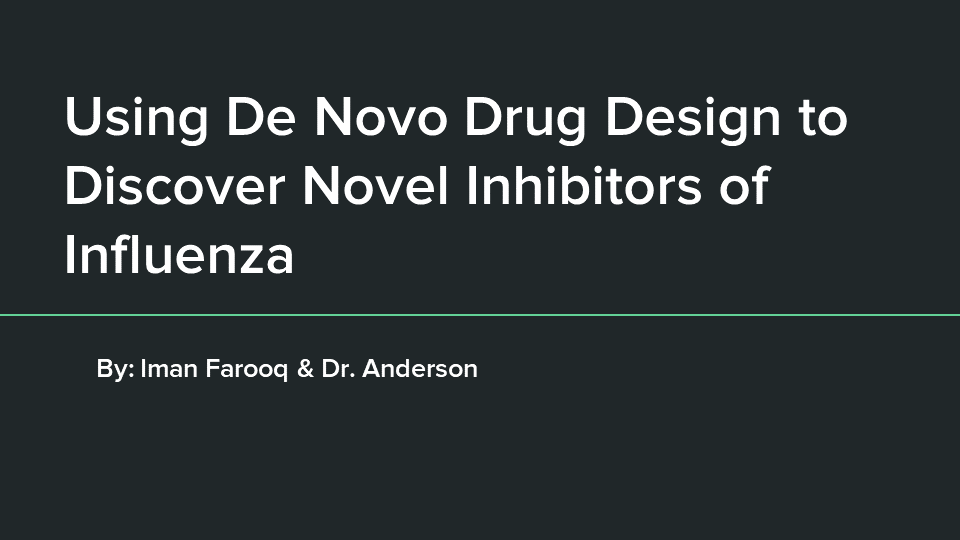

Spring 2021 Capstone Symposium
Chemistry
June 11, 2021
Click here to join the Zoom room for the live Chemistry presentations.
9:15 AM - 9:30 AM
Welcome and Introductions
By Dr. Peter Anderson
Associate Professor of Chemistry
-
9:30 AM - 9:45 AM
Using De Novo Ligand Design to Discover Protein Inhibitors of Cytomegalovirus
Faduma Abukar
Biology (B.S.)
Chemistry Minor
Faculty Advisor: Dr. Peter Anderson
-

-
9:45 AM - 10:00 AM
Using De Novo Ligand to Discover Protein Inhibitors to Treat Anaplastic Thyroid Cancer
Shahd Ismail
Biology (B.S)
Chemistry Minor
Faculty Advisor: Dr. Peter Anderson
-
10:00 AM - 10:15 AM
Building Inhibitors of Lung Cancer Using De Novo Drug Design
Jared Atienza
Biology (B.S.)
Faculty Advisor: Dr. Peter Anderson
-

-
10:15 AM - 10:30 AM
Using De Novo Ligand Design to Discover Ligands that Bind to HER2 to Inhibit Stomach Cancer
Moura Ghattas
Chemistry (B.S.) : Biochemistry Option
Biology Minor
Faculty Advisor: Dr. Peter Anderson
5 Minute Break
-
10:35 AM - 10:50 AM
Using De Novo Drug Design to Discover Novel Inhibitors of Influenza
Iman Farooq
Chemistry (B.S.) : Biochemistry Option
Biology Minor
Faculty Advisor: Dr. Peter Anderson
- 
-
10:50 AM - 11:05 AM
Using De Novo Drug Design to Build Receptor Protein Inhibitors to Treat Anxiety Disorders
Manasa Yadavalli
Chemistry (B.S.) : Biochemistry Option
Biology Minor
Faculty Advisor: Dr. Peter Anderson
-
11:05 AM - 11:20 AM
Using De Novo Drug Design to Discover Novel Inhibitors of Diabetes Mellitus
Valeria Araujo
Biology (B.S.)
Chemistry & Neuroscience Minor
Faculty Advisor: Dr. Peter Anderson
-
11:20 AM - 11:35 AM
Using De Novo Ligand Design to Discover Novel Compounds that Bind to Interleukin-4 Receptor to Serve as Potential Therapeutics for Asthma
Allison Vu
Biology (B.S.)
Chemistry Minor
Faculty Advisor: Dr. Peter Anderson
-
11:35 AM - 11:50 AM
Using De Novo Ligand Design to Discover Potein Inhibitors to Treat Non-Small Cell Lung Cancer
Seleen Jaber
Biology (B.S.)
Chemistry & Neuroscience Minor
Faculty Advisor: Dr. Peter Anderson
-

10 Minute Break
-
12:00 PM - 12:15 PM
Using De Novo Drug Design to Identify Novel Compounds that Target DNA Topoisomerase 2-alpha to Treat Multiple Sclerosis
Vincent Firstianto
Biology (B.S.)
Chemistry (B.S.): Biochemistry Option
Neuroscience MinorFaculty Advisor: Dr. Peter Anderson
-
12:15 PM - 12:30 PM
Using De Novo Drug Design to Discover Novel Inhibitors of Thyroid Deficiency
Melody Kazemini
Biology (B.S.)
Chemistry Minor
Faculty Advisor: Dr. Peter Anderson
-
12:45 PM - 1:00 PM
Using De Novo Drug Design to Discover Novel Inhibitors of BCL-2 Receptor to Possibly Treat CLL
Nicholas Aldridge
Chemistry (B.S.)
Biochemistry Option
Faculty Advisor: Dr. Peter Anderson
-

-
1:00 PM - 1:15 PM
Utilizing De Novo Ligand Design to Identify Lead Compounds That Bind to Proteins Involved with Hereditary Spastic Paraplegia (HSP)
Koby Ly
Biology (B.S.)
Chemistry Minor
Faculty Advisor: Dr. Peter Anderson
-
1:15 PM - 1:30 PM
DeNovo Ligand Design - Depression and Breast Cancer
Rachel Ren
Chemistry (B.S.)
Faculty Advisor: Dr. Peter Anderson